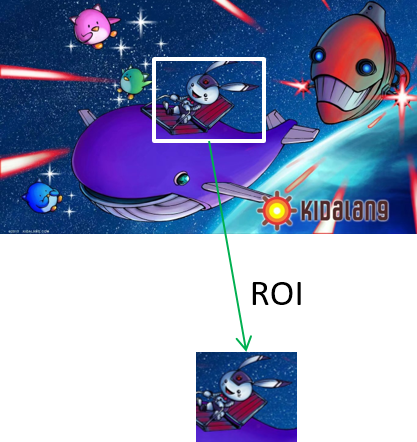
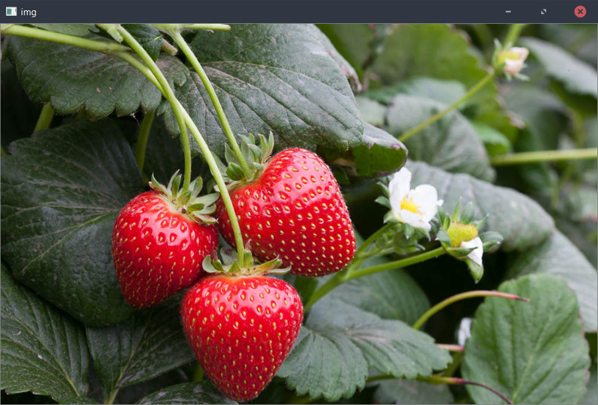
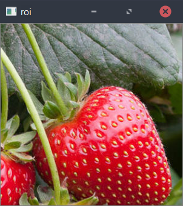
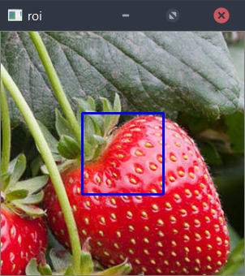

感兴趣区域(Region of Interest, ROI)
感兴趣区域，Region of Interest，简称ROI是指从原图中提取出的一个副矩阵，相当于从图像中抠出一块矩形区域。 用法:
cv::Mat img2 = img1(cv::Rect(x,y,width,height))
以上用法为从img1提取一个以(x,y)左上角，“width”宽度和“height”高度大小的矩阵。感兴趣区域和原图像是一体
注意：ROI与原图像共用一块内存数据，改变ROI，则原图对应区域也会改变。小实验
从之前的文章，这是个简单的读取并显示图像的代码：#include <opencv2/opencv.hpp>
#include <iostream>
using namespace cv;
using namespace std;
int main(int argc, char** argv)
{
//读取照片
Mat image = imread("OpenCV_Logo.png");
//检测失误
if (image.empty())
{
cout << "Could not open or find the image" << endl;
cin.get(); //等待键盘输入
return -1;
}
String windowName = "OpenCV Test"; //窗口名称
namedWindow(windowName); //创建新窗口
imshow(windowName, image); //使用新窗口显示照片
waitKey(0); //等待键盘输入
destroyWindow(windowName); //关闭所有窗口
return 0;
}
记得把"OpenCV_Logo.png"改为你的图像路径。参考上面的代码，我们编出一个最简化的实验代码：
#include <opencv2/opencv.hpp>
#include <iostream>
using namespace cv;
using namespace std;
int main(int argc, char** argv)
{
//读取照片
Mat image = imread("OpenCV_Logo.png");
//感兴趣区域
Mat roi = image(Rect(300,100,300,300));
imshow("img", image); //显示原图
imshow("roi", roi); //显示感兴趣区域
waitKey(0); //等待键盘输入
destroyWindow(windowName); //关闭所有窗口
return 0;
}
编译运行后，我们可以看到两个窗口，个别是我们的原图和提取的roi。


注意，定义ROI范围前必须先确认源图像尺寸，确保没超边。代码中没进行这方面的错误处理。
上面我们实现了感兴趣区域的提取，下面我们要证明它与原图的关系。在imshow之前，我们对roi进行绘图：
...
Mat roi = image(Rect(300,100,300,300));
//在roi上绘画
rectangle(roi, Point(100,100), Point(200,200), Scalar(255,0,0), 2);
imshow("img", image); //显示原图
...
这段添加的代码是在roi上画一个左上角为(100,100)，右下角(200,200)，边颜色为(255,0,0)蓝，变厚为2的四边形。编译运行后可获得以下结果：
可发现，我们在roi上绘画的四边形，在原图上也有，而且我们并没有在原图上绘画任何东西。这证明了感兴趣区域和原图像是公用同个内存空间的。
那如何是ROI独立？
与其使用以下代码：cv::Mat img2 = img1(cv::Rect(x,y,width,height))
我们多调用一个Mat::copyTo()函数：
cv::Mat img2;
img1(cv::Rect(x,y,width,height)).copyTo(img2);
即可。